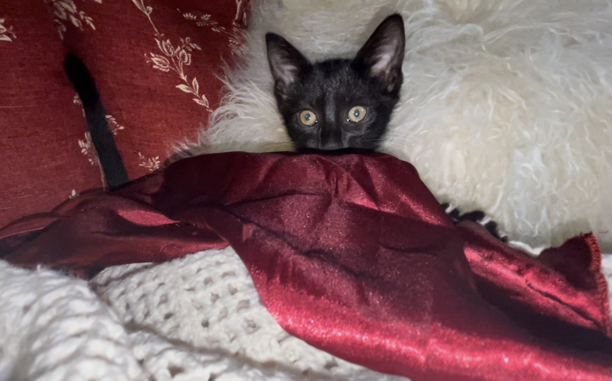
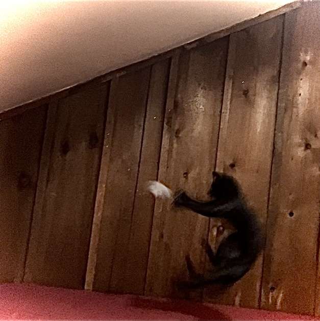
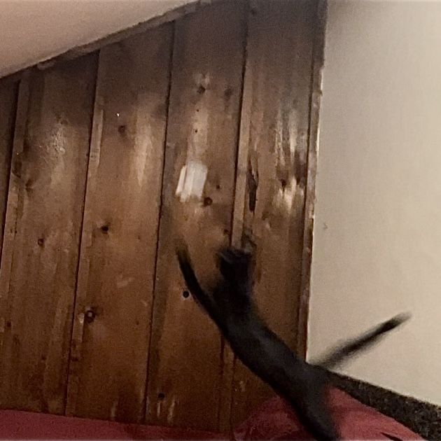
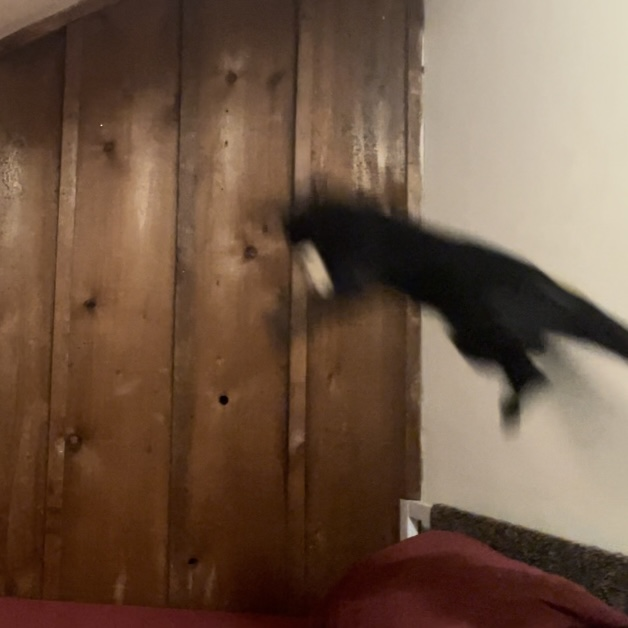
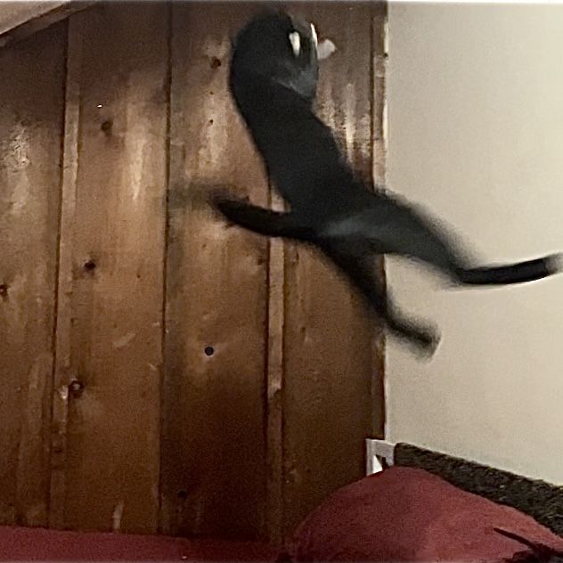

KFC: Kitten Football Camp
Reviews
Doping
SPCA Complaints
Train your kitten to be the next Alvin Kamara!
Click the link below to jump-start your kitten's football career.
Sign Up

Wide Receiver Skills We Teach at KFC

Catching the Pitch

Securing the Pass

Blocking

Nailing the Restack
"I was skeptical at first, but I am now a firm believer in the KFC method!"
-Happy Customer
Reserve your spot now!
Join the team by clicking here.
Sign Up